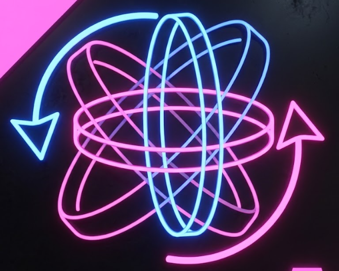

Com base na imagem de referência: anéis azuis em pé girando num sentido e anéis rosa deitados ou inclinados girando no sentido contrário. Na passagem, o anel apagado do chão se abre nessa esfera enquanto sobe, a esfera gira e, no centro, se fecha de volta no spinner do Aplicando ("APLICANDO" em cima, nome embaixo). As opções combinam traço (1 ou 2 linhas), quantidade de anéis e brilho. Todas tocam juntas a cada 4 s. "Ver a esfera girando" mostra só o objeto, parado no centro, para comparar o desenho.

Referência enviada pelo Denis (imports/referencia-esfera-neon.png).